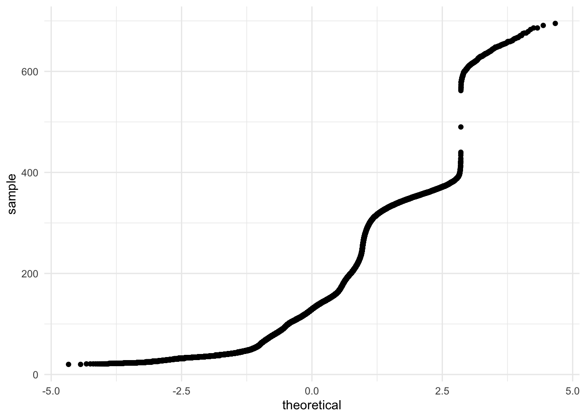

library(tidyverse)
library(rstatix)
library(ggplot2)
library(car)
library(nycflights13)Inferenzstatistik in R
Statistik
Hier beschäftigen wir uns mit den grundlegenden inferenzstatistischen Verfahren, die ihr aus den Bachelor-Vorlesungen Statistik 1 und 2 kennt.
Das ist natürlich nur ein kleiner Einblick in die statistischen Verfahren, die mit R möglich sind. Es soll euch aber schon mal ein Gefühl für den grundlegenden Aufbau der Funktionen geben, sodass ihr ohne große Probleme auch andere Verfahren benutzen könnt. In vielen Fällen kommt man mit den grundlegenden Verfahren hier auch schon relativ weit.
Die Qual der Wahl
Ähnlich wie ihr letzte Woche die Unterschiede zwischen base R und dplyr kennengelernt habt, gibt es auch für die inferenzstatistischen Verfahren verschiedene Packages und Funktionen, und damit Vorgehensweisen.
Grundsätzlich gibt es hier keine richtigen oder falschen Packages, stattdessen hängt es vom Kontext ab. Manche Packages ermöglichen ziemlich komplexe Analysen, und um sich die als Möglichkeit offen zu lassen, kann es sich lohnen, auch direkt die “einfachen” Analysen eines Projekts damit zu rechnen, damit die verschiedenen Analysen kompatibler miteinander sind. Manche Packages sind von der Syntax möglichst eingängig gestaltet, sodass man als Anfänger besser abgeholt wird. Wiederum andere bieten die gleichen Funktionen, verwenden aber leicht unterschiedliche Berechnungsmethoden, da die Methoden für verschiedene Kontexte verschieden robust sind.
Meistens macht es Sinn mit dem, was man kennt (bzw. was ihr hier kennenlernt), anzufangen. Wenn sich dann eine Datensituation ergibt, die komplexer ist, lässt sich immer noch im Internet recherchieren, welches Package/welche Funktion vielleicht besser geeignet sind. Die Hürde wird dann weniger euer R-Wissen sein, sondern eher euer allgemeines Statistik-Wissen. Unserer Erfahrung nach verbringt man eher mehr Zeit mit der Recherche von statistischen Methoden statt R-Funktionen.
Wie machen wir es hier? Wir zeigen euch die Funktionen von base R und vom Package rstatix, welches bewusst so gestaltet ist, damit es gut mit der Pipe und den dplyr-Funktionen funktioniert.
Voraussetzungen
Wie ihr wisst, gibt es für die sogennannten parametrischen Testverfahren bestimmte Voraussetzungen, die die Daten erfüllen sollten, damit die Tests anwendbar sind und die Auswertung angemessen. Vorbildlich wie wir sind, schauen wir uns diese Tests für die Voraussetzungen zuerst an.
Normalverteilung
plot(dnorm, xlim=c(-3,3))
# base
shapiro.test(Daten$Spalte)
# rstatix
data %>%
shapiro_test(Spalte)Der Shapiro-Wilk Test testet, ob die Daten signifikant von einer Normalverteilung abweichen. Wenn er signifikant wird, sind die Daten also nicht normalverteilt.
Je größer die Stichprobe ist, desto schlechter funktioniert der Shapiro-Wilk Test, da er dann tendenziell zu schnell signifikant wird, obwohl die Daten einigermaßen normalverteilt sind. Daher bietet es sich an, ab ca. n > 50 stattdessen einen QQ-Plot anzuschauen. Ab n > 5000 würde der Test nicht mehr ausgeführt werden.
# normalverteilte Werte erzeugen
vec.norm <- rnorm(100, mean = 0, sd=1)
# QQ-Plot
ggplot()+
geom_qq(aes(sample=vec.norm))+
theme_minimal()
shapiro.test(vec.norm)
Shapiro-Wilk normality test
data: vec.norm
W = 0.9863, p-value = 0.3925Bei einem QQ-Plot werden die Werte, die wir testen, standardisiert und dann gegen die “echte” Standardnormalverteilung geplottet. Wenn unsere Daten perfekt (standard)normalverteilt wären, würde sich eine perfekte 45°-Gerade ergeben. Unsere künstlichen Daten oben sind auf jeden Fall nah genug an der “perfekten Gerade” dran.
Hier noch ein Beispiel, in dem die Daten nicht normalverteilt sind:
# Daten aus nycflights13 package
ggplot(flights)+
geom_qq(aes(sample=air_time))+
theme_minimal()Warning: Removed 9430 rows containing non-finite values (`stat_qq()`).
flights# A tibble: 336,776 × 19
year month day dep_time sched_de…¹ dep_d…² arr_t…³ sched…⁴ arr_d…⁵ carrier
<int> <int> <int> <int> <int> <dbl> <int> <int> <dbl> <chr>
1 2013 1 1 517 515 2 830 819 11 UA
2 2013 1 1 533 529 4 850 830 20 UA
3 2013 1 1 542 540 2 923 850 33 AA
4 2013 1 1 544 545 -1 1004 1022 -18 B6
5 2013 1 1 554 600 -6 812 837 -25 DL
6 2013 1 1 554 558 -4 740 728 12 UA
7 2013 1 1 555 600 -5 913 854 19 B6
8 2013 1 1 557 600 -3 709 723 -14 EV
9 2013 1 1 557 600 -3 838 846 -8 B6
10 2013 1 1 558 600 -2 753 745 8 AA
# … with 336,766 more rows, 9 more variables: flight <int>, tailnum <chr>,
# origin <chr>, dest <chr>, air_time <dbl>, distance <dbl>, hour <dbl>,
# minute <dbl>, time_hour <dttm>, and abbreviated variable names
# ¹sched_dep_time, ²dep_delay, ³arr_time, ⁴sched_arr_time, ⁵arr_delayggplot(flights)+
geom_qq(aes(sample=dep_delay))+
theme_minimal()Warning: Removed 8255 rows containing non-finite values (`stat_qq()`).
hist(flights$dep_delay)
Varianzhomogenität
Bei der Varianzhomogenität geht es darum, dass unterschiedliche Gruppen bezüglich einer Variable die in etwa gleiche Varianz haben.
# rstatix
data %>%
levene_test(abhängigeVariable ~ Gruppe)
flights %>%
levene_test(dep_delay ~ factor(month))Gruppenvergleiche
t-Test
Ziel: zwei Gruppen vergleichen
Datenstruktur: kontinuierliche abhängige Variable & dichotome Gruppenvariable
Zur Veranschaulichung verwenden wir hier den Datensatz ToothGrowth: Hier wurde der Zahnwachstum von Meerschweinchen in Abhängigkeit von verabreichtem Vitamin C untersucht. Die Stichprobe besteht aus 60 Meerschweinchen und sowohl die Verabreichungsmethode (Orangensaft vs. Ascorbinsäure) als auch die Vitamin C-Dosis (0.5, 1 oder 2mg pro Tag) wurden variiert. Da wir beim t-Test nur mit zwei Gruppen arbeiten können, schauen wir uns jetzt nur die Unterschiede durch die Verabreichungsmethode an.
summary(ToothGrowth) len supp dose
Min. : 4.20 OJ:30 Min. :0.500
1st Qu.:13.07 VC:30 1st Qu.:0.500
Median :19.25 Median :1.000
Mean :18.81 Mean :1.167
3rd Qu.:25.27 3rd Qu.:2.000
Max. :33.90 Max. :2.000 view(ToothGrowth)
ToothGrowth %>%
get_summary_stats()# A tibble: 2 × 13
variable n min max median q1 q3 iqr mad mean sd se
<fct> <dbl> <dbl> <dbl> <dbl> <dbl> <dbl> <dbl> <dbl> <dbl> <dbl> <dbl>
1 len 60 4.2 33.9 19.2 13.1 25.3 12.2 9.04 18.8 7.65 0.988
2 dose 60 0.5 2 1 0.5 2 1.5 0.741 1.17 0.629 0.081
# … with 1 more variable: ci <dbl>tooth <- ToothGrowth %>%
mutate(dose = as.factor(dose))ggplot(tooth)+
geom_boxplot(aes(x=supp, y=len))+
theme_minimal()
Funktionsaufbau
# Base: Format 1
t.test(AV ~ group, data)
# Base: Format 2
t.test(daten$group1, daten$group2)
# rstatix
data %>%
t_test(AV ~ group)Die Tilde ~ ist das Zeichen in R, um einen Zusammenhang, eine Abhängigkeit oder ein Modell zu symbolisieren.
Natürlich gibt es innerhalb von t.test()/t_test() mit Argumenten Möglichkeiten um
einen t-Test für eine Stichprobe durchzuführen: z.B.
mu = 100einen t-Test für abhängige Stichproben durchzuführen:
paired = TRUEeinen gerichteten t-Test durchzuführen: z.B.
alternative = "less"bei nicht vorliegender Varianzhomogenität stattdessen den Welch-Test anzuwenden:
var.equal = FALSE
Funktionsanwendung
# Base: Format 1
t.base <- t.test(len ~ supp, tooth, var.equal = TRUE)
t.base
Two Sample t-test
data: len by supp
t = 1.9153, df = 58, p-value = 0.06039
alternative hypothesis: true difference in means between group OJ and group VC is not equal to 0
95 percent confidence interval:
-0.1670064 7.5670064
sample estimates:
mean in group OJ mean in group VC
20.66333 16.96333 # rstatix
t.rstatix <- tooth %>%
t_test(len ~ supp,var.equal = TRUE)
t.rstatix# A tibble: 1 × 8
.y. group1 group2 n1 n2 statistic df p
* <chr> <chr> <chr> <int> <int> <dbl> <dbl> <dbl>
1 len OJ VC 30 30 1.92 58 0.0604# Normalerweise würde ich die Ergebnisse nicht als Objekte speichern, dient hier nur der Demonstration.Unterschied zwischen base und rstatix:
Liste vs. tibble
base: Zusatzinfos - Zuordnung, Verständnis
rstatix: Formatierung als Tabelle
rstatix garantiert pipe-Kompatibilität, funktioniert bei Base-Funktionen nicht immer (aber manchmal)
Euch wird im Laufe der kommenden Funktionen auffallen, dass die rstatix Funktionen netterweise fast immer exakt so heißen wie die base Funktionen, nur das statt . ein _ verwendet wird: t.test() vs. t_test()
Nonparametrisch: Wilcoxon Rank Sum Test
Reminder: Wenn Voraussetzungen nicht erfüllt sein sollten.
# Base
wilcox.test(len ~ supp, tooth)Warning in wilcox.test.default(x = c(15.2, 21.5, 17.6, 9.7, 14.5, 10, 8.2, :
cannot compute exact p-value with ties
Wilcoxon rank sum test with continuity correction
data: len by supp
W = 575.5, p-value = 0.06449
alternative hypothesis: true location shift is not equal to 0# rstatix
tooth %>%
wilcox_test(len ~ supp)# A tibble: 1 × 7
.y. group1 group2 n1 n2 statistic p
* <chr> <chr> <chr> <int> <int> <dbl> <dbl>
1 len OJ VC 30 30 576. 0.0645ANOVA
Ziel: Zwei oder mehr Gruppen vergleichen.
Wir können hier bei den Meerschweinchendaten bleiben, da die Dosis-Variable drei Faktorstufen hat.
#base
tooth.aov <- aov(len ~ dose, tooth)
summary(tooth.aov) Df Sum Sq Mean Sq F value Pr(>F)
dose 2 2426 1213 67.42 9.53e-16 ***
Residuals 57 1026 18
---
Signif. codes: 0 '***' 0.001 '**' 0.01 '*' 0.05 '.' 0.1 ' ' 1#funktioniert nicht:
#tooth %>%
# aov(len ~ dose) %>%
# summary()
#rstatix
## Schreibweise 1
tooth %>%
anova_test(len ~ dose)ANOVA Table (type II tests)
Effect DFn DFd F p p<.05 ges
1 dose 2 57 67.416 9.53e-16 * 0.703## Schreibweise 2
tooth %>%
anova_test(dv = len,
between = dose)ANOVA Table (type II tests)
Effect DFn DFd F p p<.05 ges
1 dose 2 57 67.416 9.53e-16 * 0.703# Hybrid aus base und rstatix
anova_summary(tooth.aov) Effect DFn DFd F p p<.05 ges
1 1 2 57 67.416 9.53e-16 1 0.703Die Funktion aov() steht natürlich für “analysis of variances”. Die Funktion gibt uns nicht direkt das Ergebnis, was wir von einer ANOVA erwarten, sondern fittet (=“baut”) erst mal nur das Modell. Wenn wir das ANOVA-Modell auswerten wollen, müssen wir uns das aov-Ergebnis über summary() zusammenfassen lassen.
Die Funktion anova_test() gibt uns direkt das erwartete Ergebnis aus. Innerhalb der Funktion gibt es zwei mögliche Schreibweisen, um das Modell zu spezifizieren: Entweder über die Tilde, oder indem wir Rollen der Variablen separat über die Argumente spezifizieren.
# Hybrid aus base und rstatix
anova_summary(tooth.aov) Effect DFn DFd F p p<.05 ges
1 1 2 57 67.416 9.53e-16 1 0.703anova_summary() kann Outputs von aov() verwerten und verpackt sie in das praktische dataframe-Format, das wir von anova_test() schon kennen.
Komplexere Modelle
Komplexere Modelle mit mehreren Faktoren lassen sich natürlich auch realisieren. Dafür ein neues Beispiel: Im Datensatz ChickWeight wurde das Gewicht von Küken seit Geburt getrackt. Es sind verschiedene Messzeitpunkte und die Art der Ernährung enthalten.
ChickWeight %>%
summary() weight Time Chick Diet
Min. : 35.0 Min. : 0.00 13 : 12 1:220
1st Qu.: 63.0 1st Qu.: 4.00 9 : 12 2:120
Median :103.0 Median :10.00 20 : 12 3:120
Mean :121.8 Mean :10.72 10 : 12 4:118
3rd Qu.:163.8 3rd Qu.:16.00 17 : 12
Max. :373.0 Max. :21.00 19 : 12
(Other):506 view(ChickWeight)Hier schauen wir uns direkt nur rstatix an, da das die eindeutig angenehmere Umsetzung ist.
# rstatix
# Schreibweise 1
ChickWeight %>%
anova_test(weight ~ Diet + Time + Error(Chick/Time))ANOVA Table (type III tests)
$ANOVA
Effect DFn DFd F p p<.05 ges
1 Diet 3 41 5.075 4.00e-03 * 0.161
2 Time 11 451 280.945 6.41e-194 * 0.769
3 Diet:Time 33 451 3.766 9.34e-11 * 0.118
$`Mauchly's Test for Sphericity`
Effect W p p<.05
1 Time 2.68e-17 1.03e-251 *
2 Diet:Time 2.68e-17 1.03e-251 *
$`Sphericity Corrections`
Effect GGe DF[GG] p[GG] p[GG]<.05 HFe DF[HF] p[HF]
1 Time 0.114 1.26, 51.48 2.01e-24 * 0.116 1.28, 52.34 8.63e-25
2 Diet:Time 0.114 3.77, 51.48 1.00e-02 * 0.116 3.83, 52.34 1.00e-02
p[HF]<.05
1 *
2 *# Schreibweise 2
ChickWeight %>%
anova_test(dv = weight,
between = Diet,
within = Time,
wid = Chick)ANOVA Table (type III tests)
$ANOVA
Effect DFn DFd F p p<.05 ges
1 Diet 3 41 5.075 4.00e-03 * 0.161
2 Time 11 451 280.945 6.41e-194 * 0.769
3 Diet:Time 33 451 3.766 9.34e-11 * 0.118
$`Mauchly's Test for Sphericity`
Effect W p p<.05
1 Time 2.68e-17 1.03e-251 *
2 Diet:Time 2.68e-17 1.03e-251 *
$`Sphericity Corrections`
Effect GGe DF[GG] p[GG] p[GG]<.05 HFe DF[HF] p[HF]
1 Time 0.114 1.26, 51.48 2.01e-24 * 0.116 1.28, 52.34 8.63e-25
2 Diet:Time 0.114 3.77, 51.48 1.00e-02 * 0.116 3.83, 52.34 1.00e-02
p[HF]<.05
1 *
2 *Bei Daten mit Messwiederholung müssen wir spezifizieren, welcher Faktor mehrmals gemessen wurde und an welcher Variable erkannt wird, welche Messungen zu welchem “Probanden” gehören. In der Formelschreibweise lässt sich das durch den Term Error(ProbandenID/wiederholterFaktor) ausdrücken. In der Argumentschreibweise spezifizieren wir within = wiederholterFaktor und wid = ProbandenID
anova_test() testet netterweise die Sphärizität direkt mit. Wenn der Mauchly-Test signifikant wird, müssen wir die messwiederholten Faktoren (hier: Time und die Interaktion Diet:Time) im unteren Abschnitt des Outputs interpretieren. Die Spalten mit “GG” sind dabei korrigiert nach Greenhouse-Geisser, die Spalten mit “HF” nach Huynh-Feldt.
Kovariaten können wir in anova_test() über das Argument covariate = einfügen, so wie bei dv =, between = usw.
Noch mehr Faktoren/Variablen lassen sich über c() verknüpfen, z.B. between = c(Diet, Species)
Post Hoc Test
Wenn eine ANOVA signifikant wird, interessiert uns meistens noch, welche/r der Mittelwertsunterschiede dafür verantwortlich ist. Im Bezug auf unser Meerschweinchen-Beispiel hängt der Zahnwachstum offensichtlich von der Dosis ab, aber bisher wissen wir nicht, ob die höchste Dosis zu mehr Wachstum als die anderen beiden führt, oder ob sich alle signifikant voneinander unterscheiden, oder ob es nur einen Unterschied im Bezug zur niedrigsten Dosis gibt usw.
# base
TukeyHSD(tooth.aov) Tukey multiple comparisons of means
95% family-wise confidence level
Fit: aov(formula = len ~ dose, data = tooth)
$dose
diff lwr upr p adj
1-0.5 9.130 5.901805 12.358195 0.00e+00
2-0.5 15.495 12.266805 18.723195 0.00e+00
2-1 6.365 3.136805 9.593195 4.25e-05# rstatix
tooth %>%
tukey_hsd(len ~ dose)# A tibble: 3 × 9
term group1 group2 null.value estimate conf.low conf.high p.adj p.adj.si…¹
* <chr> <chr> <chr> <dbl> <dbl> <dbl> <dbl> <dbl> <chr>
1 dose 0.5 1 0 9.13 5.90 12.4 2 e- 8 ****
2 dose 0.5 2 0 15.5 12.3 18.7 1.12e-11 ****
3 dose 1 2 0 6.36 3.14 9.59 4.25e- 5 ****
# … with abbreviated variable name ¹p.adj.signifDie Funktion tukey_hsd erlaubt als Input entweder eine Formel (wie hier) oder das Ergebnis von aov() oder lm(). Der Output von anova_test() funktioniert hier nicht als Input!
Nonparametrisch: Kruskal-Wallis Rank Sum Test
# base
kruskal.test(tooth, len ~ dose)Warning in kruskal.test.default(tooth, len ~ dose): 'x' is a list, so ignoring
argument 'g'Warning in kruskal.test.default(tooth, len ~ dose): some elements of 'x' are not
numeric and will be coerced to numeric
Kruskal-Wallis rank sum test
data: tooth
Kruskal-Wallis chi-squared = 129.49, df = 2, p-value < 2.2e-16# rstatix
tooth %>%
kruskal_test(len ~ dose)# A tibble: 1 × 6
.y. n statistic df p method
* <chr> <int> <dbl> <int> <dbl> <chr>
1 len 60 40.7 2 0.00000000148 Kruskal-WallisZusammenhänge
Korrelation
Ziel: Zusammenhang zwischen zwei Variablen feststellen
Datenstruktur: Zwei kontinuierliche Variablen
Als Beispiel haben wir den cars Datensatz, der Geschwindigkeit und Bremsweg von Autos enthält.
get_summary_stats(cars)# A tibble: 2 × 13
variable n min max median q1 q3 iqr mad mean sd se
<fct> <dbl> <dbl> <dbl> <dbl> <dbl> <dbl> <dbl> <dbl> <dbl> <dbl> <dbl>
1 speed 50 4 25 15 12 19 7 5.93 15.4 5.29 0.748
2 dist 50 2 120 36 26 56 30 23.7 43.0 25.8 3.64
# … with 1 more variable: ci <dbl>ggplot(cars)+
geom_point(aes(speed, dist))+
theme_minimal()
# r base
cor(cars$speed, cars$dist)[1] 0.8068949# rstatix
cars %>%
cor_test(speed, dist)# A tibble: 1 × 8
var1 var2 cor statistic p conf.low conf.high method
<chr> <chr> <dbl> <dbl> <dbl> <dbl> <dbl> <chr>
1 speed dist 0.81 9.46 1.49e-12 0.682 0.886 Pearson# psych
library(psych)
Attaching package: 'psych'The following object is masked from 'package:car':
logitThe following objects are masked from 'package:ggplot2':
%+%, alphacorr.test(cars$speed, cars$dist)Call:corr.test(x = cars$speed, y = cars$dist)
Correlation matrix
[1] 0.81
Sample Size
[1] 50
These are the unadjusted probability values.
The probability values adjusted for multiple tests are in the p.adj object.
[1] 0
To see confidence intervals of the correlations, print with the short=FALSE optionBase R kann Korrelationen berechnen, hat aber standardmäßig keinen Test auf Signifikanz enthalten. Hier wird der Nutzen von rstatix besonders deutlich.
Als Ergänzung noch die Funktion corr.test() aus dem psych Package.
Nonparametrisch: Spearman & Kendall
Nonparametrische Korrelationsberechnungen lassen sich über das Argument method spezifizieren.
data %>%
cor_test(method = "Spearman") # oder auch KendallRegression
Ziele:
Gruppenunterschiede feststellen
Werte vorhersagen
relevante Prädiktoren für eine bestimmte abhängige Variable identifizieren
Modell mit bestem Fit finden
Datenstruktur: kontinuierliche abhängige Variable & kategoriale/kontinuierliche Prädiktoren
Hier haben wir als Datenbeispiel den Datensatz swiss, in dem die Fertilität der Population der 47 französisch-sprachigen Provinzen in der Schweiz erfasst wurde. Die weiteren Variablen:
Agriculture: % of males involved in agriculture as occupationExamination: % draftees receiving highest mark on army examinationEducation: % education beyond primary school for drafteesCatholic: % ‘catholic’ (as opposed to ‘protestant’)Infant.Mortality: live births who live less than 1 year
swiss Fertility Agriculture Examination Education Catholic
Courtelary 80.2 17.0 15 12 9.96
Delemont 83.1 45.1 6 9 84.84
Franches-Mnt 92.5 39.7 5 5 93.40
Moutier 85.8 36.5 12 7 33.77
Neuveville 76.9 43.5 17 15 5.16
Porrentruy 76.1 35.3 9 7 90.57
Broye 83.8 70.2 16 7 92.85
Glane 92.4 67.8 14 8 97.16
Gruyere 82.4 53.3 12 7 97.67
Sarine 82.9 45.2 16 13 91.38
Veveyse 87.1 64.5 14 6 98.61
Aigle 64.1 62.0 21 12 8.52
Aubonne 66.9 67.5 14 7 2.27
Avenches 68.9 60.7 19 12 4.43
Cossonay 61.7 69.3 22 5 2.82
Echallens 68.3 72.6 18 2 24.20
Grandson 71.7 34.0 17 8 3.30
Lausanne 55.7 19.4 26 28 12.11
La Vallee 54.3 15.2 31 20 2.15
Lavaux 65.1 73.0 19 9 2.84
Morges 65.5 59.8 22 10 5.23
Moudon 65.0 55.1 14 3 4.52
Nyone 56.6 50.9 22 12 15.14
Orbe 57.4 54.1 20 6 4.20
Oron 72.5 71.2 12 1 2.40
Payerne 74.2 58.1 14 8 5.23
Paysd'enhaut 72.0 63.5 6 3 2.56
Rolle 60.5 60.8 16 10 7.72
Vevey 58.3 26.8 25 19 18.46
Yverdon 65.4 49.5 15 8 6.10
Conthey 75.5 85.9 3 2 99.71
Entremont 69.3 84.9 7 6 99.68
Herens 77.3 89.7 5 2 100.00
Martigwy 70.5 78.2 12 6 98.96
Monthey 79.4 64.9 7 3 98.22
St Maurice 65.0 75.9 9 9 99.06
Sierre 92.2 84.6 3 3 99.46
Sion 79.3 63.1 13 13 96.83
Boudry 70.4 38.4 26 12 5.62
La Chauxdfnd 65.7 7.7 29 11 13.79
Le Locle 72.7 16.7 22 13 11.22
Neuchatel 64.4 17.6 35 32 16.92
Val de Ruz 77.6 37.6 15 7 4.97
ValdeTravers 67.6 18.7 25 7 8.65
V. De Geneve 35.0 1.2 37 53 42.34
Rive Droite 44.7 46.6 16 29 50.43
Rive Gauche 42.8 27.7 22 29 58.33
Infant.Mortality
Courtelary 22.2
Delemont 22.2
Franches-Mnt 20.2
Moutier 20.3
Neuveville 20.6
Porrentruy 26.6
Broye 23.6
Glane 24.9
Gruyere 21.0
Sarine 24.4
Veveyse 24.5
Aigle 16.5
Aubonne 19.1
Avenches 22.7
Cossonay 18.7
Echallens 21.2
Grandson 20.0
Lausanne 20.2
La Vallee 10.8
Lavaux 20.0
Morges 18.0
Moudon 22.4
Nyone 16.7
Orbe 15.3
Oron 21.0
Payerne 23.8
Paysd'enhaut 18.0
Rolle 16.3
Vevey 20.9
Yverdon 22.5
Conthey 15.1
Entremont 19.8
Herens 18.3
Martigwy 19.4
Monthey 20.2
St Maurice 17.8
Sierre 16.3
Sion 18.1
Boudry 20.3
La Chauxdfnd 20.5
Le Locle 18.9
Neuchatel 23.0
Val de Ruz 20.0
ValdeTravers 19.5
V. De Geneve 18.0
Rive Droite 18.2
Rive Gauche 19.3swiss.lm <- lm(Fertility ~ Agriculture + Examination + Education + Catholic, swiss)
summary(swiss.lm)
Call:
lm(formula = Fertility ~ Agriculture + Examination + Education +
Catholic, data = swiss)
Residuals:
Min 1Q Median 3Q Max
-15.7813 -6.3308 0.8113 5.7205 15.5569
Coefficients:
Estimate Std. Error t value Pr(>|t|)
(Intercept) 91.05542 6.94881 13.104 < 2e-16 ***
Agriculture -0.22065 0.07360 -2.998 0.00455 **
Examination -0.26058 0.27411 -0.951 0.34722
Education -0.96161 0.19455 -4.943 1.28e-05 ***
Catholic 0.12442 0.03727 3.339 0.00177 **
---
Signif. codes: 0 '***' 0.001 '**' 0.01 '*' 0.05 '.' 0.1 ' ' 1
Residual standard error: 7.736 on 42 degrees of freedom
Multiple R-squared: 0.6498, Adjusted R-squared: 0.6164
F-statistic: 19.48 on 4 and 42 DF, p-value: 3.95e-09#funktioniert nicht:
# swiss %>%
# lm(Fertility ~ Agriculture)Mit diesem Output können wir feststellen, welche Prädiktoren signifikant mit der Fertilität zusammenhängen, kontrolliert für die anderen Prädiktoren. Auch hier sehen wir wieder: lm() baut nur das Modell, erst summary() wertet es aus. In dem Fall gibt es kein Äquivalent von rstatix.
Wie oben erwähnt, kann ein anderes mögliches Ziel einer Regression sein, das Regressionsmodell mit dem besten Fit zu den Daten herauszufinden, also nur Prädiktoren nach dem Prinzip “so viel wie nötig, so wenig wie möglich” im finalen Modell zu behalten. Dafür werden mehrere Regressionsgleichungen bezüglich ihrer Varianzaufklärung miteinander verglichen.
# Modelle bauen
swiss.lm1 <- lm(Fertility ~ 1, swiss)
swiss.lm2 <- update(swiss.lm1, ~. + Education)
swiss.lm3 <- update(swiss.lm2, ~. + Catholic)
# Modelle vergleichen
anova(swiss.lm1, swiss.lm2, swiss.lm3)Analysis of Variance Table
Model 1: Fertility ~ 1
Model 2: Fertility ~ Education
Model 3: Fertility ~ Education + Catholic
Res.Df RSS Df Sum of Sq F Pr(>F)
1 46 7178.0
2 45 4015.2 1 3162.7 45.564 2.66e-08 ***
3 44 3054.2 1 961.1 13.846 0.0005598 ***
---
Signif. codes: 0 '***' 0.001 '**' 0.01 '*' 0.05 '.' 0.1 ' ' 1Mithilfe der Funktion update() können wir uns sparen, das bisherige Modell noch mal komplett einzutippen. Sie funktioniert nach dem Prinzip update(altes Modell, neues Modell). Mit ~. kürzen wir das alte Modell ab, danach ergänzen wir neue Prädiktoren und/oder Interaktionen.
Die Funktion anova() ist potentiell verwirrend: Wir rechnen hier offensichtlich keine ANOVA, wie wir sie weiter oben kennengelernt haben. Wir führen allerdings schon eine “Analyse der Varianzen” durch - nur beziehen sich die Varianzen auf jeweils die aufgeklärte Varianz der Regressionsmodelle. anova() kann als Input nur “fitted model objects” verwerten, also bereits erstellte Modelle, und gibt als Output einen Vergleich dieser Modelle.
Ansonsten lassen sich Messwiederholungen genauso wie in der “Formelschreibweise” der ANOVA über + Error(ProbandenID/messwiederholteVariable) spezifizieren.
Interaktionen können wir in die Formel durch * oder : einbauen: Fertility ~ Education*Catholic
Andere Ressourcen:
Überblick über
rstatx-Funktionen: https://rpkgs.datanovia.com/rstatix/Liste von Datasets, die direkt in base R abrufbar sind: https://stat.ethz.ch/R-manual/R-devel/library/datasets/html/00Index.html